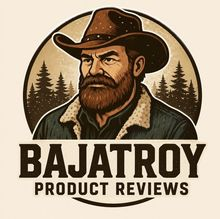
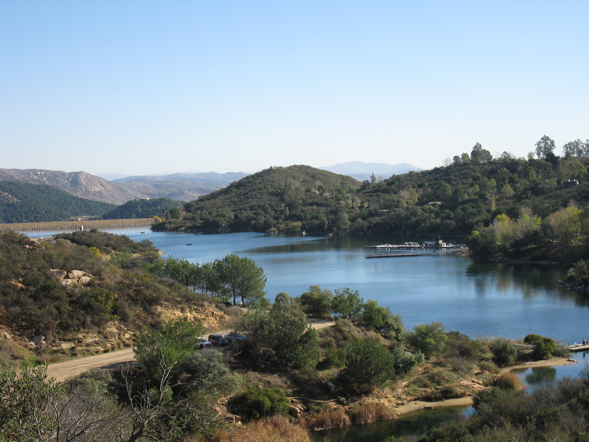
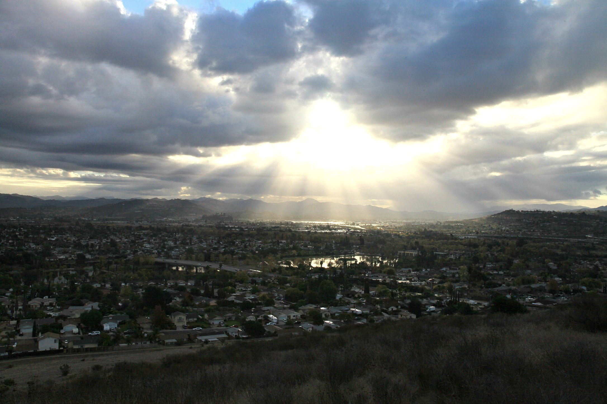
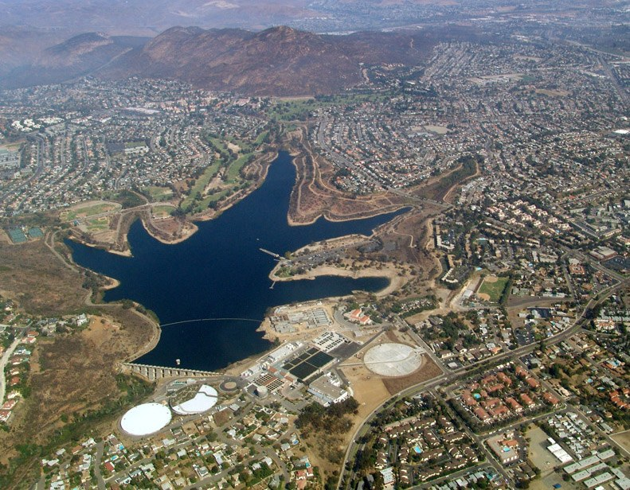
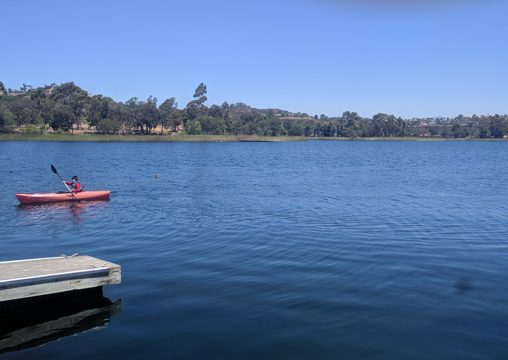
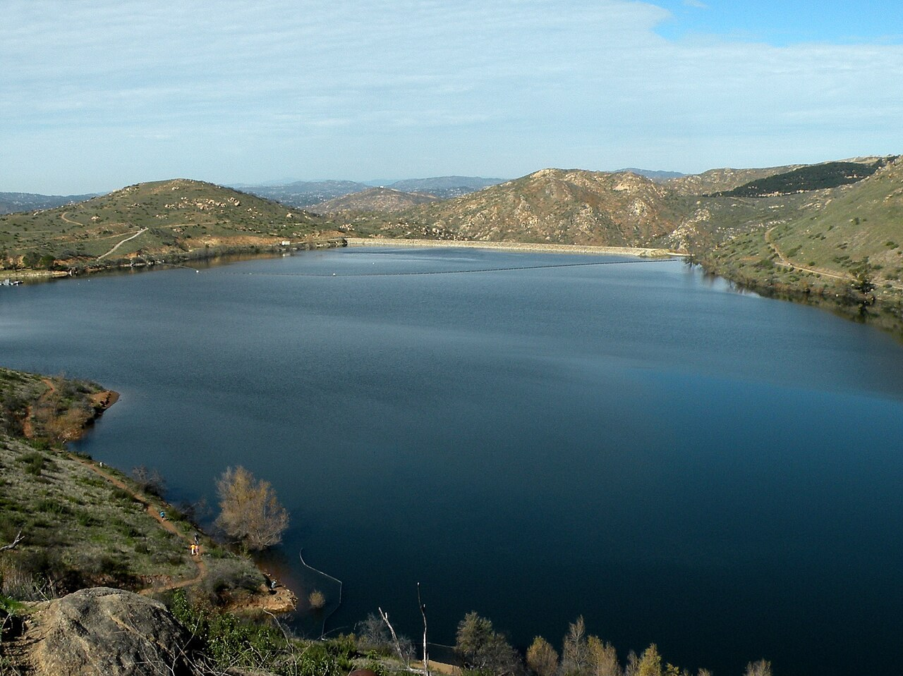
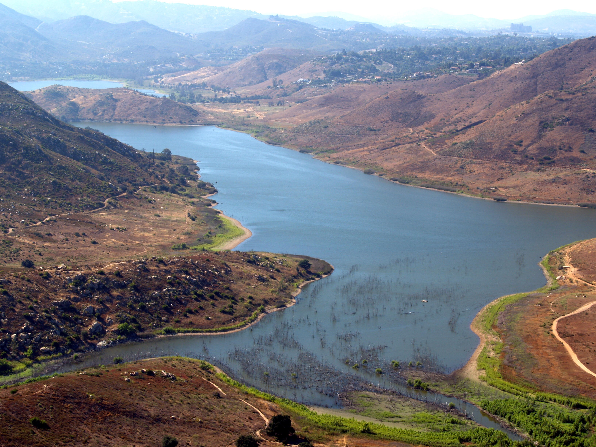
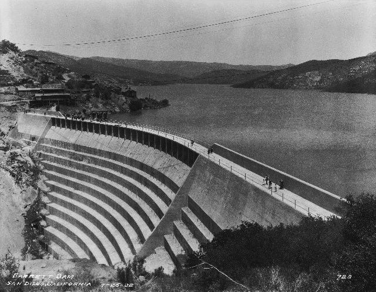
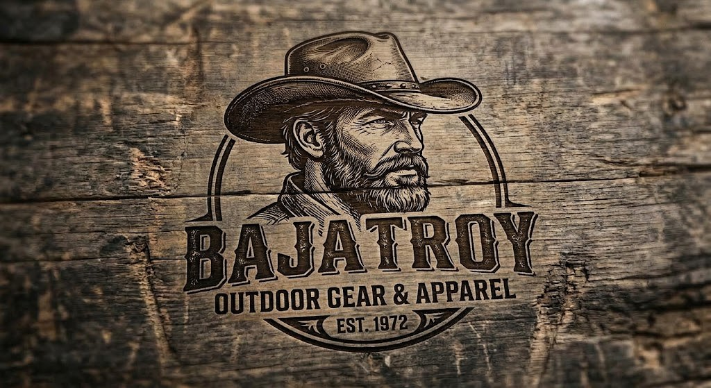

BAJA TROY CHECKS IT OUT
BAJATROY REVIEWS
SAN DIEGO COUNTY
FISHING LAKES
“Bigger bait, bigger fish.”
BAJA TROY, 1972
10 lakes1 secret spotdixon → lower otaycoast to backcountry
PACK 2 OF 2 · SOUTHERN CALIFORNIA LAKE FISHING
PACK 2 NAVIGATION
Jump to a Lake
Tap a lake to jump straight there. The INDEX button in the bar below brings you back to this page from anywhere — and HOME takes you to your front door.
PACK 2 · INTRO
HOW TO USE THIS PACK
Down in San Diego County, the lakes sit like a string of blue beads across the hills—city parks, county reservoirs, and a few quiet holes where a man can get away from the noise and remember why he started fishin’ in the first place. These waters ain’t as high and cold as the mountain lakes, but they got bass, cats, trout in the cool months, and enough panfish to keep the young’uns busy. If you’re willin’ to pay the day fee, mind the heat, and cast where the shade hits, these lakes’ll put dinner on the table and a few good stories in your pocket.
THE LAKES — COAST TO BACKCOUNTRY
- 01Dixon Lake
- 02Santee Lakes
- 03Lake Murray
- 04Miramar Reservoir
- 05Lake Poway
- 06El Capitan Reservoir
- 07Hodges Reservoir
- 08Barrett Lake
- 09Lake Morena
- 10Lower Otay Reservoir
- SS2Secret Spot #2 — The “Call-In Sick” Hole
Fees in this pack are published rates checked October 2026 — rates move, so confirm the week you fish. State fishing license is separate where required; Dixon and Poway run their own permits.
Fished one of these lakes? Got a correction, a hot bite report, or a story worth tellin’? Email BAJA TROY at bajatroyreviews@gmail.com — and check the front door (HOME) for the podcast invite. Fish one of these waters and you might end up sitting down for an interview.
LAKE 01 OF 10
DIXON LAKE
ESCONDIDO · CITY OF ESCONDIDO LAKE
Out near Escondido, where the hills roll green in a good year and the catfish act like they own the bottom.

Rental boats at the dock — private watercraft stay home.
Photo: Chris Doig · Public domain
Photo: Chris Doig · Public domain
SPECIES
largemouth basschannel catfishrainbow trout (cool season)bluegill
ACCESS
bank + pierrental boats onlyno private watercraft
VIBE
city lakefamilytrophy potentialheat-heavy
DIXON LAKE
ACCESS & FEES
FISHING PERMIT
Adult $10 · youth 8–15 & senior 60+ $7 — collected at the lake. No California fishing license required at Dixon.
VEHICLE ENTRY
$5 weekends, holidays & special events — seniors 60+ free.
BOATS
Rental watercraft only. Private boats, kayaks, canoes, float tubes & contamination-risk gear are prohibited.
HOURS
Gates open 6 a.m.; closing varies by season, generally dusk. Boats come in one hour before close.
CLOSURES
Closed Christmas Day. Authorized summer night-fishing events are the exception — check the city calendar.
SPECIAL RULES
Trout cannot be released. Two-bass daily limit listed; posted size wording varies (“over 12 inches” vs “minimum 12 inches”) — read the board at the gate.
DIXON LAKE
SPECIES & STOCKING
PRIMARY
Largemouth bass, channel catfish
SECONDARY
Rainbow trout in the cool season, bluegill
STOCKING
City documents annual trout and catfish stocking. Cool-season trout confirmed — no fixed weekly schedule promised.
REGS
CA license not required here; Dixon runs its own permit. Confirm current bass wording at the gate.
DIXON LAKE
SEASONS & TIMING
BEST WINDOWS
Cool months carry the trout plants; catfish and bass run the calendar. Summer brings authorized night-fishing events. Gates open 6 a.m. year-round; closing slides with the season.
DIXON LAKE
TACTICS & GEAR
SPRING BASS
Work the warming shoreline bays with plastics and craw imitations; pre-dawn and the last hour of light do the heavy lifting.
SUMMER CATS
Dip bait on the bottom after dark during night-fishing events; deep shade lines hold fish through the heat.
TROUT WINDOWS
Right after a cool-season plant, fish small spinners and power bait near the dock and inlet side.
PIER PLAY
The pier is the great equalizer — bring the family, keep bait simple, and watch for the catfish patrol along the bottom.
DIXON LAKE
FACILITIES & SAFETY
RESTROOMS & SHADE
Restrooms, picnic areas, playground and drinking water confirmed. Shade quantity unverified — bring a canopy in summer.
RENTALS
Boat rentals confirmed at the lake.
CELL SERVICE
Unverified — don’t count on it in the bottom corners.
SAFETY NOTES
- Summer heat is no joke — water, shade, sunscreen.
- Private watercraft of any kind are prohibited — don’t haul a kayak out here.
- Ranger station: 760-839-4680.
DIXON LAKE
MOUNTAIN MAN VERDICT
BAJA TROY’S CALL
“Big fish don’t care how small the lake looks.”
DIFFICULTY
Easy to fish, hard to master — piers and stockings carry the day; the big bass take work.
FAMILY-FRIENDLY
High — playground, picnic grounds, and stocked catfish keep the young’uns hooked.
LAKE 02 OF 10
SANTEE LAKES
SANTEE · PADRE DAM MUNICIPAL WATER DISTRICT
Out in Santee, where seven little lakes sit side by side like a bunch of gossipin’ cousins, each with its own mood and fish.

Seven lakes under storm light — sun about to break through.
Photo: Devindad · CC BY-SA 4.0
Photo: Devindad · CC BY-SA 4.0
SPECIES
largemouth basschannel catfishrainbow trout
ACCESS
shore fishingdistrict rentals onlycampground on site
VIBE
recreation preservefamilycampgroundrules-strict
SANTEE LAKES
ACCESS & FEES
FISHING PERMIT
Adult $10 · senior 60+ & junior $6 · extra-pole stamp $4.
PARKING
$4 weekday · $7 weekend/holiday · $10 special-event & peak holidays.
WHICH LAKES
Lakes 1–5 open to public fishing unless posted. Lakes 6–7 require registered-camper status or a special-use stamp with a daily permit — stamp availability may be limited.
HOURS
October: Mon–Thu 7 a.m.–6 p.m.; Fri–Sun 6 a.m.–6 p.m. November closing moves to 5 p.m.
CLOSURES
Thanksgiving, Christmas Eve and Christmas.
NIGHT FISHING
Authorized campers only, Lakes 6–7, 5–11 p.m. with night permits: adult $6 · senior/junior $3.
SANTEE LAKES
SPECIES & STOCKING
PRIMARY
Largemouth bass, channel catfish, rainbow trout
STOCKING
2026 catfish calendar runs roughly biweekly April–October in selected lakes. Stocked lakes close on stocking day. Next listed October plant: Oct 9, 1,000 lbs into Lakes 2 & 6. Winter trout calendar not yet posted.
REGS
Bass is strictly catch-and-release. Trout and carp may not be released. No chumming, no corn.
NOTE
Bluegill and crappie not individually verified in the checked sources.
SANTEE LAKES
SEASONS & TIMING
BEST WINDOWS
Catfish plants run roughly every two weeks April through October — and stocked lakes close on plant day, so check the calendar before you drive. The winter trout calendar gets posted later in the fall.
SANTEE LAKES
TACTICS & GEAR
STOCKING WEEK
Fish the days right after a plant — fresh cats cruise the shallows of the stocked lakes. Lakes 2 and 6 are on the October calendar.
BASS & RELEASE
Bass are strictly catch-and-release — pin the barbs, keep the fish wet, and snap the photo fast.
TROUT CLEAN
Trout can’t be released. Fish bait or small spinners tight to cover in the cool months.
CAMP LAKES
Lakes 6–7 are the quiet money for campers — night permits run 5–11 p.m.
SANTEE LAKES
FACILITIES & SAFETY
ON SITE
Campground, store, office and rental boating confirmed. Pedal boats advertised; fishing-kayak rentals not established.
CELL SERVICE
Unverified.
SAFETY NOTES
- This is a water-district preserve, not a city park — district rentals only, no ordinary private watercraft.
- Read the board: bass go back, trout and carp don’t, and no corn anywhere.
- Parking adds up on weekends — bring singles.
SANTEE LAKES
MOUNTAIN MAN VERDICT
BAJA TROY’S CALL
“Seven lakes, one rod, and no reason to hurry.”
DIFFICULTY
Easy fishing with strict house rules — read the board before you bait up.
FAMILY-FRIENDLY
Very high — seven lakes, a campground, a store, and fish that practically volunteer.
LAKE 03 OF 10
LAKE MURRAY
SAN DIEGO · CITY OF SAN DIEGO RESERVOIR
Out in San Diego, where the city lake acts like it’s got more bass sense than the whole county put together.

The whole lake from above — city water in the city’s lap.
Photo: Intersofia · Public domain
Photo: Intersofia · Public domain
SPECIES
largemouth basschannel catfishbluegill & sunfishcrappie
ACCESS
shore fishingboats 5 mph maxkayaks $7
VIBE
city reservoirfamilydrawdown watch
LAKE MURRAY
ACCESS & FEES
FISHING PERMIT
Adult $10 · youth 8–15 $5 · senior 65+ $7. California license required 16+.
BOATS
Private boat $10 · kayak/canoe $7 per craft. Maximum speed 5 mph.
HOURS
Sunrise to sunset.
CLOSURES
Second Tuesday monthly, Thanksgiving, Christmas and New Year’s Day.
WATER NOTES
Restricted / no-access water near the dam. No fishing within 100 feet of boat or courtesy docks.
DRAWDOWN
The city page carries a drawdown warning affecting ramp and shoreline access. An anticipated recovery date is not proof of reopening — call first.
LAKE MURRAY
SPECIES & STOCKING
PRIMARY
Largemouth bass, channel catfish
SECONDARY
Bluegill & sunfish, crappie
TROUT
The individual lake page lists trout; the consolidated city list does not. Don’t plan a trip around regular trout plants here.
REGS
City brochure lists a 12-inch minimum on bass. California license required 16+.
LAKE MURRAY
SEASONS & TIMING
BEST WINDOWS
Spring and fall are the comfortable bass windows before the summer bake. Watch the drawdown news before planning a boat day — and remember the second-Tuesday monthly closure.
LAKE MURRAY
TACTICS & GEAR
SPRING BASS
Fish the edges of the permitted shoreline with plastics; work the points early before the walkers arrive.
SUMMER
Go early, go deep-shaded, or don’t go — midday summer heat shuts the bite down.
CRAPPIE & SUNFISH
Small jigs under a bobber around cover; great kid fishing where the shore allows.
BOAT DAYS
Kayaks at $7 are the smart money — 5 mph keeps the lake calm and the fish honest.
LAKE MURRAY
FACILITIES & SAFETY
RESTROOMS & PICNIC
Restrooms, picnic tables and barbecue areas confirmed.
RENTALS
Current rentals not established.
CELL SERVICE
Unverified.
SAFETY NOTES
- No fishing within 100 feet of the docks, and respect the dam-side restricted water.
- Closed every second Tuesday — check the calendar.
- City reservoirs: 619-668-2050 — confirm ramp status before a boat day.
LAKE MURRAY
MOUNTAIN MAN VERDICT
BAJA TROY’S CALL
“Leave the city noise behind—even if you can still hear it.”
DIFFICULTY
City-lake fishing at city pace — dock etiquette and the drawdown matter more than fancy tackle.
FAMILY-FRIENDLY
High — picnic tables, barbecues, and easy shore access; just not on the second Tuesday.
LAKE 04 OF 10
MIRAMAR RESERVOIR
SAN DIEGO · CITY OF SAN DIEGO RESERVOIR
Out in San Diego, where the reservoir sits quiet and the bass hide like they’re dodgin’ a subpoena.

Morning glass on Miramar — kayaks welcome, SUPs stay home.
Photo: Ramesh Lalwani · CC BY-SA 4.0
Photo: Ramesh Lalwani · CC BY-SA 4.0
SPECIES
largemouth basschannel catfishtroutbluegill & crappie
ACCESS
shore segmentskayaks & canoes OKno SUPs
VIBE
city reservoirquiet watercheck postings
MIRAMAR RESERVOIR
ACCESS & FEES
FISHING PERMIT
Adult $10 · youth $5 · senior $7. California license required 16+.
BOATS
Private boats $10 · kayaks/canoes $7. Kayaks, canoes and float tubes allowed — SUPs prohibited.
HOURS
Sunrise to sunset.
CLOSURES
First Tuesday monthly, Thanksgiving, Christmas and New Year’s Day.
SHORE ACCESS
Shore fishing is allowed, but the exact open segments are not published. The perimeter path does not equal fishing access — check postings on site.
ALGAE WATCH
The city posts algae-bloom warnings. A warning is not itself a full closure — but read it before you wet a line.
MIRAMAR RESERVOIR
SPECIES & STOCKING
SPECIES
All five listed by the City: bass, catfish, trout, bluegill and crappie.
STOCKING
Trout plants referred to CDFW. Fixed catfish-stocking frequency not verified.
SIZE RULES
Bass/crappie minimum-size sources conflict — don’t quote a number until current regulations are confirmed at the gate.
MIRAMAR RESERVOIR
SEASONS & TIMING
BEST WINDOWS
Like the other city reservoirs, spring and fall fish best in mild weather. Algae-bloom warnings can come with warm stretches — check the city posting the day you go.
MIRAMAR RESERVOIR
TACTICS & GEAR
KAYAK EDGE
Kayaks are the tool here — work the shoreline structure slow and quiet, early light best.
FLOAT TUBES
Allowed; fine for working the open segments near permitted shore.
FAMILY PANFISH
Bluegill and crappie around cover with worms and small jigs.
POSTING FIRST
Read the boards at the gate before launching — open segments and warnings change.
MIRAMAR RESERVOIR
FACILITIES & SAFETY
RESTROOMS & PICNIC
Restrooms, drinking fountains, picnic tables and barbecues confirmed.
RENTALS
Not fully verified.
CELL SERVICE
Not fully verified.
SAFETY NOTES
- First Tuesday of the month is a closure day.
- No SUPs — leave the paddleboard home.
- City reservoirs: 619-668-2050.
MIRAMAR RESERVOIR
MOUNTAIN MAN VERDICT
BAJA TROY’S CALL
“Trade the traffic line for a fishing line.”
DIFFICULTY
Walk-in friendly, but know which shoreline segments are open before you go.
FAMILY-FRIENDLY
High — fountains, picnic tables, and room to roam.
LAKE 05 OF 10
LAKE POWAY
POWAY · CITY OF POWAY LAKE
Out in Poway, where the little lake acts like it’s got more bass sense than the whole county put together.

Lake Poway from the hills — small water, mountain manners.
Photo: Byron Hetrick · CC BY-SA 2.0
Photo: Byron Hetrick · CC BY-SA 2.0
SPECIES
largemouth basschannel catfishbluegill & sunfishrainbow trout
ACCESS
shore fishingrental boats onlyclosed Mondays
VIBE
city lakemountain backdroprules-strict
LAKE POWAY
ACCESS & FEES
FISHING PERMIT
Adult $7 · youth/senior $3 · military with ID $4. No California fishing license required.
NONRESIDENT ENTRY
$10 weekends and holidays for non-residents.
BOATS
Rental fishing boats: $31 full day · $25 half day. Private motors, anchors and float tubes prohibited — this is rental-boat fishing, not bring-your-kayak water.
HOURS
Fishing Tuesday–Sunday, 6 a.m. to sunset. Monday is not a normal fishing day. Boating ends 30 minutes before sunset.
NIGHT EVENTS
Authorized night events run separate extended hours — check the city calendar.
LAKE POWAY
SPECIES & STOCKING
PRIMARY
Largemouth bass, rainbow trout, channel catfish
SECONDARY
Bluegill & sunfish
STOCKING
Trout and summer catfish stocking documented; fixed frequency not verified. Historical trout season runs December–April; current winter calendar not yet posted.
REGS
Bass minimum 12 inches, five maximum. Bass catch-and-release March–April (spawn). Trout limit four, no release. Two rods maximum. No corn, no chumming, no outside live bait.
LAKE POWAY
SEASONS & TIMING
BEST WINDOWS
December through April is the historic trout season; summer carries the catfish plants. Bass get a catch-and-release break in March and April while they spawn.
LAKE POWAY
TACTICS & GEAR
TROUT SEASON
Cool months after a plant: small spinners, mini-jigs, and power bait fished slow off the points.
SPAWN ETHICS
March–April bass are catch-and-release — handle fast, keep them in the water for photos.
SUMMER CATS
Evening bottom-fishing with cut bait along the deeper shore.
RENTAL STRATEGY
Split a half-day rental, fish the dam side first, and be off the water 30 minutes before sunset — it’s the rule.
LAKE POWAY
FACILITIES & SAFETY
RESTROOMS & SHADE
Park facilities at Lake Poway; shade quantity unverified.
RENTALS
Fishing-boat rentals posted at $31 full / $25 half.
CELL SERVICE
Unverified.
SAFETY NOTES
- Monday is not a fishing day — the lake rests.
- No private watercraft motors, no anchors, no float tubes.
- Bring ID for the military rate.
LAKE POWAY
MOUNTAIN MAN VERDICT
BAJA TROY’S CALL
“Some mornings need a mountain backdrop and a bent rod.”
DIFFICULTY
Simple lake, real rules — two rods, no corn, and Monday belongs to the fish.
FAMILY-FRIENDLY
High — cheap permits, rentals on site, and trout in the cool months.
LAKE 06 OF 10
EL CAPITAN RESERVOIR
NEAR LAKESIDE · CITY OF SAN DIEGO RESERVOIR
Out near Lakeside, where the reservoir sits quiet and the bass hide like they’re dodgin’ a subpoena.
PHOTO SLOT OPEN — no free-license photo
verified yet. Got a shot of this lake?
Email bajatroyreviews@gmail.com
verified yet. Got a shot of this lake?
Email bajatroyreviews@gmail.com
El Capitan country — big hills, small craft.
SPECIES
largemouth bassbluegill & sunfishchannel catfishcrappie
ACCESS
shore fishingportable crafttrailer ramp closed
VIBE
backcountry waterweekdays offlow-water watch
EL CAPITAN
ACCESS & FEES
ADMISSION
Adult $10 · youth $5 · senior $7 — admission includes fishing, and applies to visitors 8+ even when not fishing.
DAYS
Friday–Tuesday, 30 minutes before sunrise to sunset. Closed Wednesday, Thursday and the first Friday of each month.
CLOSURES
Thanksgiving, Christmas and New Year’s Day.
BOATS
The trailer-boat ramp is posted closed for low water. Shore fishing and portable craft — canoes, car-toppers, kayaks and float tubes — remain listed as available. Private-boat tariff $10 listed; exact kayak charging unclear — confirm at the gate.
EL CAPITAN
SPECIES & STOCKING
PRIMARY
Largemouth bass
SECONDARY
Bluegill & sunfish, channel catfish, crappie
NO TROUT
Trout are not listed for El Capitan — don’t plan on them here.
STOCKING
No recurring catfish or trout calendar verified.
EL CAPITAN
SEASONS & TIMING
BEST WINDOWS
Open Friday through Tuesday, closed midweek. Low water has the trailer ramp shut, so shore and small-craft fishing carry the season. Spring and fall fish best; summer heat out here is serious.
EL CAPITAN
TACTICS & GEAR
SHORE BASS
Work rocky points and drop-offs with crankbaits and plastics; early and late light rule.
SMALL CRAFT
Carry-in kayaks and float tubes reach water the shore anglers can’t — confirm hand-launch spots at the gate.
PANFISH
Bluegill and crappie keep kids busy in the coves.
HEAT PLAN
No fish-cleaning stations and limited services — pack everything in, including shade.
EL CAPITAN
FACILITIES & SAFETY
RESTROOMS & PICNIC
Restrooms, picnic tables and barbecues confirmed.
NOT AVAILABLE
No fish-cleaning stations. Rentals unverified.
CELL SERVICE
Unverified — plan for dead air.
SAFETY NOTES
- Closed Wednesday and Thursday — don’t drive out midweek.
- Trailer ramp closed for low water; confirm what launch access exists before hauling anything.
- City reservoirs: 619-668-2050.
EL CAPITAN
MOUNTAIN MAN VERDICT
BAJA TROY’S CALL
“The name sounds like a boss. Fish like you work for nobody.”
DIFFICULTY
Bring a carry-able boat — the trailer ramp’s down, so it’s shore and small-craft country.
FAMILY-FRIENDLY
Good for a Friday-to-Tuesday family run — verify rentals before promising the kids a boat.
LAKE 07 OF 10
HODGES RESERVOIR
ESCONDIDO · CITY OF SAN DIEGO RESERVOIR
Out near Escondido, where the reservoir sits quiet and the bass hide like they’re dodgin’ a subpoena.

Hodges from the air — half the year, three days a week.
Photo: Phil Konstantin · CC BY-SA 3.0
Photo: Phil Konstantin · CC BY-SA 3.0
SPECIES
largemouth bassbluegill & sunfishchannel catfishcrappie
ACCESS
shore fishinghand-launch onlyWed / Sat / Sun
VIBE
seasonal waterquietiron ranger pay
HODGES RESERVOIR
ACCESS & FEES
FISHING PERMIT
Adult $10 · youth $5 · senior $7. Pay at the electronic station / iron ranger.
SEASON
Posted season is February–October. Open Wednesday, Saturday and Sunday, sunrise to sunset. Closed November through January.
ENTRANCE
20175 Lake Drive, Escondido.
BOATS
Page expressly says “No Boat Launch” — a $10 private-boat tariff and $7 kayak/canoe/SUP rate are listed, but don’t count on a usable trailer ramp or guaranteed rentals. Confirm hand-launch locations with staff.
INSPECTION
All vessels require inspection.
HODGES RESERVOIR
SPECIES & STOCKING
PRIMARY
Largemouth bass
SECONDARY
Bluegill & sunfish, channel catfish, crappie
NO TROUT
Trout and regular stocking not verified for Hodges.
STOCKING
No verified stocking calendar.
HODGES RESERVOIR
SEASONS & TIMING
BEST WINDOWS
The season is short and the days are few: February through October, and only Wednesday, Saturday and Sunday while it’s open. When it’s on, spring and fall are the prime windows.
HODGES RESERVOIR
TACTICS & GEAR
WINDOW FISHING
With three days a week, pick your weather — the day after a calm warm spell fishes best.
SHORE BASS
Rocky structure and points with plastics; the lake sees light pressure for how good it can be.
KAYAK CARE
If hand-launch is confirmed, kayaks get you the back corners — but every vessel gets inspected.
OFF-SEASON
November through January the gates are shut — respect the closure.
HODGES RESERVOIR
FACILITIES & SAFETY
RESTROOMS & PICNIC
Restrooms, picnic tables and barbecues confirmed.
NOT AVAILABLE
No drinking fountains, no fish-cleaning stations.
CELL SERVICE
Unverified.
SAFETY NOTES
- February–October only, Wed/Sat/Sun only — check the season before anything else.
- “No Boat Launch” is posted — confirm what’s actually usable.
- No fountains — pack all your water.
HODGES RESERVOIR
MOUNTAIN MAN VERDICT
BAJA TROY’S CALL
“Bring patience—the fish didn’t agree to your schedule.”
DIFFICULTY
Weekends only, half the year — when it’s open, it fishes like a secret.
FAMILY-FRIENDLY
Moderate — picnics yes, but bring your own water and plan around Wed/Sat/Sun.
LAKE 08 OF 10
BARRETT LAKE
NEAR JACUMBA · CITY OF SAN DIEGO · RESERVATION ONLY
Out near Jacumba, where the reservoir sits quiet and the bass hide like they’re dodgin’ a subpoena.

Barrett Dam, 1922 — the lake still keeps its secrets.
Photo: San Diego Historical Society, 1922 · Public domain
Photo: San Diego Historical Society, 1922 · Public domain
SPECIES
largemouth bassbluegill & sunfishbullhead catfishcrappie
ACCESS
reservation onlyescorted entrycatch & release
VIBE
trophy waterhard ticketwild country
BARRETT LAKE
ACCESS & FEES
SEASON
Regular fishing season is May–September — over as of October 6. Waterfowl season is not fishing access.
RESERVATIONS
Ticketmaster only, bought at least one day ahead. No walk-up, no walk-in days.
RATES
Shore / float-tube reservation $45 per person plus booking fees. Boat & motor reservation $150 including one person; extra guests $45 each, maximum four on the boat reservation. Maximum two vehicles.
ENTRY
Fishing Wednesday, Saturday and Sunday; closed the first Wednesday monthly. Entry at 5, 6 or 7 a.m.; departures at noon, 2, 4 or 6 p.m. and sunset.
CHECK-IN
Reservation holder needs photo ID; the group enters together under escort.
BARRETT LAKE
SPECIES & STOCKING
PRIMARY
Largemouth bass — all fishing is catch-and-release, artificial lures and barbless hooks only.
SECONDARY
Bluegill & sunfish, bullhead catfish, crappie
NO TROUT
Trout not listed for Barrett.
BOATS
No private boats. Reserved city boats, kayaks and float tubes are listed — kayak booking details need confirmation.
BARRETT LAKE
SEASONS & TIMING
BEST WINDOWS
May through September, and only with a reservation. Book the day after the tickets drop for summer dates — this is the hardest ticket in San Diego County fishing.
BARRETT LAKE
TACTICS & GEAR
TICKET FIRST
Everything starts at Ticketmaster, one day ahead minimum. No reservation, no lake — no exceptions.
BARBLESS DISCIPLINE
Everything goes back — crush those barbs and keep bass in the water for the photo.
SUMMER BASS
Topwater at first light on the points; drop-shot the deeper edges when the sun climbs.
GROUP MATH
A $150 boat reservation covers one angler; split a four-angler boat and the per-person math improves — max two vehicles per reservation.
BARRETT LAKE
FACILITIES & SAFETY
ON SITE
Restrooms, picnic tables and reserved boats confirmed.
NOT AVAILABLE
No concessions, no fountains, no fish-cleaning stations — pack it all in.
CELL SERVICE
Unverified.
SAFETY NOTES
- No reservation means no entry — the gate turns people away.
- Photo ID for the reservation holder, and the whole group enters together under escort.
- Barbless, artificial only, everything released.
BARRETT LAKE
MOUNTAIN MAN VERDICT
BAJA TROY’S CALL
“The fish go back. The story rides home.”
DIFFICULTY
Hardest ticket in the county — reservation, escort, barbless hooks, and fish that all go back.
FAMILY-FRIENDLY
Low on logistics, high on memory — leave the little ones home for this one.
LAKE 09 OF 10
LAKE MORENA
NEAR CAMPO · SAN DIEGO COUNTY PARKS
Out near Jacumba, where the reservoir sits quiet and the bass hide like they’re dodgin’ a subpoena.

Morena shoreline — backcountry water, county-park rules.
San Diego History Center, 1918 · Public domain
San Diego History Center, 1918 · Public domain
SPECIES
largemouth basschannel catfishrainbow troutbluegill & crappie
ACCESS
shore fishingkayaks & canoes10 mph lake
VIBE
county parkcampgroundbackcountry
LAKE MORENA
ACCESS & FEES
FISHING PERMIT
Adult $8 · junior 10–15 & senior 62+ $5 · children 9 and under free. California license also required.
DAY USE
County day-use parking $5 — senior 62+ and disabled free.
LAUNCH
Private-boat launch $12. Motorboat rental $55 · rowboat $25.
HOURS
Sources conflict: the county main page says sunrise to 30 minutes before sunset; an August fishing page listed 6:30 a.m.–7 p.m. with boats off by 6:30. Confirm current gate times before you drive.
RULES
Vessel inspection required. Maximum speed 10 mph — no waterskiing, no swimming.
LAKE MORENA
SPECIES & STOCKING
SPECIES
All five supported by county material: bass, catfish, trout, bluegill and crappie.
TROUT
A winter and early-spring trout tradition is documented; current stocking calendar and regular catfish frequency not verified.
LAKE MORENA
SEASONS & TIMING
BEST WINDOWS
Winter and early spring carry the trout tradition; summer is bass and catfish in the heat. Water levels move the shoreline around year to year — the lake at low water is a different lake.
LAKE MORENA
TACTICS & GEAR
TROUT TRADITION
Cool months after a plant: power bait and small spinners off the easier shore.
BASS STRUCTURE
Water level changes the map — fish the new shoreline structure after a rise; slow plastics along the rocks.
KAYAK CORNERS
Kayaks, canoes and float tubes are allowed under county rules — get past the first coves and pressure drops.
CAMP & FISH
County campground on the water — fish the evening bite from shore, then the morning bite before the day crowd.
LAKE MORENA
FACILITIES & SAFETY
ON SITE
Camping and rental boats confirmed.
RESTROOMS & SHADE
Availability at each fishing spot not audited — scout on arrival.
CELL SERVICE
Not audited.
SAFETY NOTES
- Vessel inspection required — clean, drain, dry.
- 10 mph lake — no waterskiing, no swimming.
- Confirm gate hours: county sources conflict. Lake Morena: 619-478-5473.
LAKE MORENA
MOUNTAIN MAN VERDICT
BAJA TROY’S CALL
“Come for a cast. Stay until your shoulders drop.”
DIFFICULTY
Backcountry lake with backcountry rules — slow speeds, inspected boats, and water levels that change the map.
FAMILY-FRIENDLY
High for campers — county park, rental boats, and room to spread out.
LAKE 10 OF 10
LOWER OTAY RESERVOIR
CHULA VISTA · CITY OF SAN DIEGO RESERVOIR
Out near Chula Vista, where the reservoir sits quiet and the bass hide like they’re dodgin’ a subpoena.
PHOTO SLOT OPEN — no free-license photo
verified yet. Got a shot of this lake?
Email bajatroyreviews@gmail.com
verified yet. Got a shot of this lake?
Email bajatroyreviews@gmail.com
Lower Otay — big water waiting on its ramp.
SPECIES
largemouth bassbluegill & sunfishchannel catfishcrappie
ACCESS
shore fishinghand-launch confirmramp closed
VIBE
city reservoirbig wateraccess watch
LOWER OTAY
ACCESS & FEES
FISHING PERMIT
Adult $10 · youth $5 · senior $7. California license required. Same-day permit is also valid at Upper Otay.
DAYS
Open Wednesday, Saturday and Sunday, sunrise to sunset. Closed the second Wednesday monthly, Thanksgiving, Christmas and New Year’s Day.
RAMP
The trailer-boat ramp has been closed since June 3, 2026. A listed $10 private-boat / $7 kayak tariff does not establish usable launch access — confirm current hand-launch availability before hauling anything.
CRAFT
Boats, canoes, kayaks and float tubes are listed; SUPs prohibited.
LOWER OTAY
SPECIES & STOCKING
PRIMARY
Largemouth bass
SECONDARY
Bluegill & sunfish, channel catfish, crappie
NO TROUT
Trout and regular stocking not verified for Lower Otay.
BASS RULES
No slot limit verified — none printed here. A concessionaire lists a 12-inch bass minimum, but current CDFW lake-specific confirmation was not obtained. Verify at the gate.
LOWER OTAY
SEASONS & TIMING
BEST WINDOWS
Open Wed/Sat/Sun only. With the trailer ramp closed since June, this is a shore-fishing season until the city restores launch access. Spring and fall carry the best bass windows.
LOWER OTAY
TACTICS & GEAR
SHORE SEASON
Work the accessible shoreline with plastics and topwater at first light; midday goes deep or goes home.
CALL FIRST
619-668-2050 — confirm hand-launch before you drive. Access has been changing since the ramp closed.
BIG WATER MINDSET
This is large, open water — wind is a real factor for small craft.
PANFISH BACKUP
Bluegill and crappie keep a slow day alive along the cover.
LOWER OTAY
FACILITIES & SAFETY
RESTROOMS & PICNIC
Restrooms, drinking fountain, picnic tables and barbecues confirmed.
RENTALS
Rental operation during the ramp closure not verified.
CELL SERVICE
Unverified.
SAFETY NOTES
- Trailer ramp closed since June 3, 2026 — no boat trailers.
- Closed the second Wednesday monthly.
- SUPs prohibited.
LOWER OTAY
MOUNTAIN MAN VERDICT
BAJA TROY’S CALL
“Let the wind talk. You’ve got fishing to do.”
DIFFICULTY
Big water with the ramp down — shore fishing and confirmed hand-launch spots are the game.
FAMILY-FRIENDLY
Moderate — picnic space and sunsets, but call about access first.
CLASSIFIED
LAKE SS2 OF 10
SECRET SPOT #2 — THE “CALL-IN SICK” HOLE
SOUTHERN CALIFORNIA EDITION · BETWEEN YOUR PHONE AND YOUR CONSCIENCE
This hole ain’t on no map. It’s located somewhere between your phone, your boss, and your conscience.
SPECIES
mysteryguiltadrenaline
ACCESS
bank-secretboat-if-you-darekayak-through-the-brush
VIBE
wildremoteno signalno social mediabaja troy approved
SECRET SPOT #2 — THE “CALL-IN SICK” HOLE
ACCESS & FEES
SECRET SPOT #2 — THE “CALL-IN SICK” HOLE
SPECIES & STOCKING
SECRET SPOT #2 — THE “CALL-IN SICK” HOLE
SEASONS & TIMING
SECRET SPOT #2 — THE “CALL-IN SICK” HOLE
TACTICS & GEAR
SECRET SPOT #2 — THE “CALL-IN SICK” HOLE
FACILITIES & SAFETY
SAFETY NOTES
- Put on suntan lotion—you don’t want to show up to work lookin’ like you spent two days on a lake when you said you was dyin’ at home.
- Keep your bragging rights in your back pocket and your man card holstered.
- Stay off social media. No pics, no stories, no “wish you was here” nonsense.
- If your boss drives by and sees your truck at the ramp, you never seen that bass in your life.
SECRET SPOT #2 — THE “CALL-IN SICK” HOLE
MOUNTAIN MAN VERDICT
The “Call-In Sick” hole ain’t a place on a map—it’s the place you find when you trade a day’s pay for a story you’ll tell till retirement.
DIFFICULTY
Expert (requires navigatin’ by lies, luck, and stubbornness)
FAMILY-FRIENDLY
Moderate (kids love it till they tell their teacher, then they love it less)
FIND BAJA TROY
Watch, Read, Ride Along
WATCH ON YOUTUBE ALL MY LINKS EMAIL BAJA TROYTen San Diego County lakes and one classified hole, fact-checked October 2026. Fished one of these waters? Got a correction or a story? Email me — and check the front door for the podcast invite.

Decks and pages managed & owned by Trailhead Commerce.
“Some men chase a name. I chase whatever’s bending my fishing rod.”
— BAJA TROY
TELL ’EM BAJA TROY SENT YOU.
BE A GUEST ON THE PODCAST — LINK IN BIO.